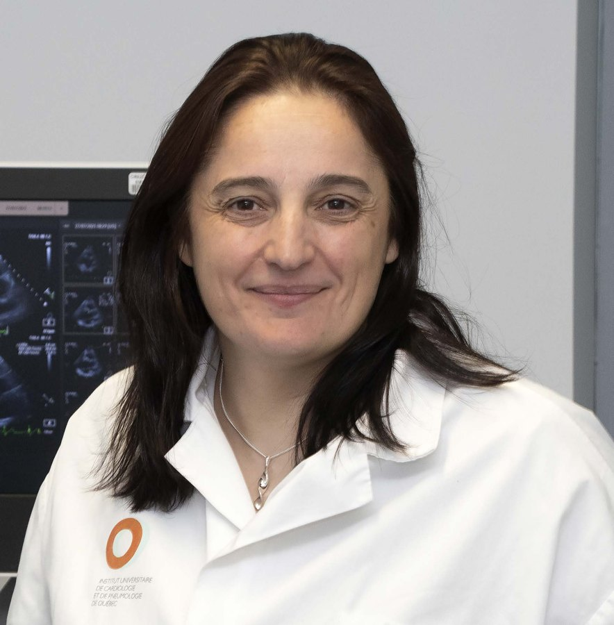
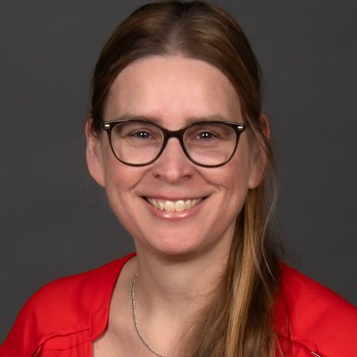
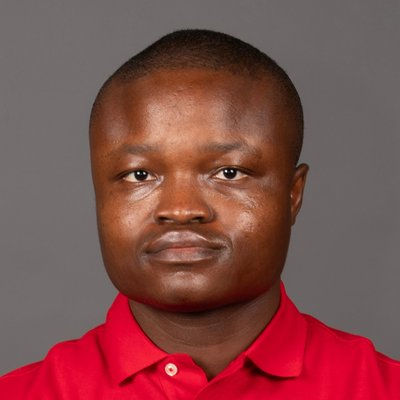

Qu'est-ce qu'une maladie des valves du cœur ?
Le rôle des valves, ce qui peut les abîmer et les maladies les plus fréquentes.
Lire la ficheInstitut universitaire de cardiologie et de pneumologie de Québec – Université Laval
Les maladies des valves du cœur ne se présentent pas toujours de la même façon chez les femmes et chez les hommes. Notre chaire étudie ces différences et partage ce savoir avec les patientes, les patients, leurs proches et la communauté.

Pour les patientes et leurs proches
Des fiches rédigées en langage simple, validées par notre équipe de recherche, seront publiées ici au cours des prochaines semaines.
Le rôle des valves, ce qui peut les abîmer et les maladies les plus fréquentes.
Lire la ficheCe que la recherche nous apprend sur les différences entre les femmes et les hommes.
Lire la ficheFatigue, essoufflement, étourdissements : parlez-en à votre médecin.
Fiche à venir
L'échocardiographie, le scanner et les autres examens, expliqués étape par étape.
Fiche à venir
Les options possibles et une liste de questions pour préparer votre rendez-vous.
Fiche à venir
Pourquoi votre participation compte et comment se déroule une étude.
En savoir plusPlusieurs de ces sujets ont été développés en collaboration avec cet organisme de patients (Heart Valve Voice Canada – Une voix aux maladies valvulaires), qui offre aussi des guides et des témoignages.
Nos recherches
Notre laboratoire réunit la recherche clinique auprès des patientes et des patients et la recherche fondamentale.
Les différences entre les femmes et les hommes dans le développement des maladies des valves cardiaques.
Des critères, des biomarqueurs et des outils d'imagerie adaptés à chaque sexe.
Le bon moment et le bon type d'intervention pour les femmes, et le suivi des résultats après le traitement.
Les différences entre les femmes et les hommes dans l'hypertrophie, la fibrose et l'insuffisance cardiaque.

La titulaire
Professeure titulaire au Département de médecine de l'Université Laval et chercheure à l'Institut universitaire de cardiologie et de pneumologie de Québec depuis 2014, elle est titulaire de la Chaire de recherche du Canada sur la santé valvulaire et cardiaque des femmes et dirige le laboratoire central d'imagerie ValvulaR Multi-Imaging (VaRMI).
Elle a publié plus de 350 articles scientifiques et figure, depuis 2025, parmi les 2 % des scientifiques les plus cités au monde selon le classement Stanford/Elsevier.
Son programme de recherche vise à caractériser les différences entre les sexes dans la physiopathologie, le diagnostic et le traitement des maladies valvulaires cardiaques. Son laboratoire mène à la fois de la recherche clinique multidisciplinaire axée sur les patientes et les patients et de la recherche fondamentale, afin de développer et de valider des stratégies d'évaluation, de prise en charge et de traitement adaptées à chaque sexe.
En plus de ses articles, elle a présenté plus de 500 résumés dans des congrès nationaux et internationaux. Elle a reçu plusieurs distinctions, dont le Prix du jeune chercheur 2019 et le Prix de conférencière à mi-carrière 2024 en sciences cardiovasculaires de la Société canadienne de cardiologie et des Instituts de recherche en santé du Canada.
La Dre Clavel est fellow de la Société canadienne de cardiologie, de l'American Heart Association et de l'American College of Cardiology. Elle siège au conseil d'administration de la Société canadienne d'échocardiographie, est directrice de la recherche au conseil de la Heart Valve Society et rédactrice adjointe principale du European Heart Journal – Cardiovascular Imaging.
L'équipe
Derrière chaque projet de la chaire, il y a une équipe : des professionnel(le)s de recherche, des étudiant(e)s et des stagiaires qui accompagnent les participantes et les participants, analysent les données et font avancer les connaissances au quotidien.
Former la relève en santé cardiovasculaire des femmes fait partie intégrante de notre mission.


Katy VaillancourtCoordonnatrice de recherche clinique Vanessa CoutureInfirmière
Vanessa CoutureInfirmière
Diwaba Carmel TeouProfessionnel en sciences fondamentales et imagerie Najib OuidadiÉtudiant au doctorat (PhD)
Najib OuidadiÉtudiant au doctorat (PhD) Emma Le NezetÉtudiante au doctorat (PhD)
Emma Le NezetÉtudiante au doctorat (PhD) Joey ParadisÉtudiant à la maîtrise (MD, MSc)
Joey ParadisÉtudiant à la maîtrise (MD, MSc) Sylvie MorinAssistante administrative
Sylvie MorinAssistante administrative Chloé Marqueze-PoueyProfessionnelle en sciences fondamentales
Chloé Marqueze-PoueyProfessionnelle en sciences fondamentales Kathia AbdounDoctorat (PhD)Chloé Marqueze-PoueyMaîtrise (MSc)
Kathia AbdounDoctorat (PhD)Chloé Marqueze-PoueyMaîtrise (MSc)Chaque participante aide à mieux comprendre le cœur des femmes. La liste de nos études en cours sera publiée ici prochainement ; d'ici là, écrivez-nous pour savoir comment y prendre part.
Affiliations